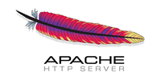

| Project Management: | More than 30 projects and startups managed successfully. |
| Web development: | More than 15 professional web applications delivered. |
| Team Management: | Managing teams of up to 9 engineers since 2007. |
| Teaching & Public Speaking: | More than a 1200 hours of university teaching and professional training. |
| Business Strategy: | as an entrepreneur and executive board member, I've been facing complex business decisions since 2009 |
| Micro-services: | My architecture of choice since 2008 |
This was probably the most intense professional experience of my career. In just 9 months I had to learn new sales skills, familiarize with new industries, navigate IBM’s complex internal procedures and above all, achieve a 6 Million USD target. The most rewarding part was learning sales skills. I attended IBM’s Global Sales School in Austria, which is one of the best sales trainings in the world. It helped me acquire the techniques necessary to conduct effective C-level sales meetings. I was able to sell technology services (Datacenter Maintenance, migrations, etc...) to Morocco’s largest companies such as Attijari, INWI, BMCE, Banque Populaire, and others. Disclaimer: I did not achieve the sales target.
In September 2008 I teamed up with NGA’s former director in Casablanca to create the first HR SaaS solution for Morocco. In about 1 year, I single-handedly created a multitenant payroll and HR management solution in Java and Adobe Flex. We got our first customer by the beginning of 2010 and grown slowly to 5 customers by the end of the year. During that same period, we started raising VC money from Dayam Capital (Saham group). A few weeks before closing the deal, my co-founder quit, leaving the startup paralyzed. During a few months I tried to continue operations with zero capital, but had finally to shut down in summer 2011.
Dec’07 to Jul’08 in Kuala Lumpur, Malaysia
Leading a team of 9 engineers working on the implementation of Cadbury International SAP based HR Information System (120,000 employees, 68 countries). My team was in charge of the implementation of the serf-service portal for the first two countries.
Aug’07 to Dec’07 in Casablanca, Morocco
Project manager on an SAP portal project for Agilent Technologies. Coordinated remotely with the US local team to deliver on time according to American standards.
Jun’07 to Jul’07 in Milan, Italy
In just 2 months and a team of 2, we delivered a time management solution for Sanofi-Aventis Italy. I Ensured coordination with customer’s IT and HR teams to determine the requirements and implement an SAP based HR web solution.
As a SAP HCM consultant and web development specialist, I worked on several implementations of SAP based HR web applications for global Fortune500 companies. I designed and implemented ABAP web services, Ajax screens and Java servlets for large projects such as:
Web developer on Barq research project. I developed several Java servlets and JSP’s for a large-scale multilingual web search engine. The project was shut down but left behind a published research paper: “Barq: distributed multilingual Internet search engine with focus on Arabic language” In proceedings of IEEE Conf. on Sys. Man and Cyber., Washington DC, October 5-8, 2003.
Ninja |
|
Professional |
 |
Collaboration |
| Moroccan Arabic: | Native |
| Classical Arabic: | Fluent |
| English: | Fluent |
| French: | Fluent |
Since 2003, I developed a passion for entrepreneurship and creating innovative solutions on the internet. I have since nurtured this passion through activities like:
Adil developed deep and close relationships during his time at IBM and although there could be times of high emotion, Adil remained calm and focused. He is a highly knowledgeable and proven IT professional with a deep understanding of the IT market place. Adil is a pleasure to work with, extremely diligent and organised and if he says he will do something, he will. A colleague to be trusted to get on with the job
From the very first day Adil joined our team in Morocco, he demonstrated a hunger for learning, a will to be a word-class Engineer. He worked hard and smart, accepted to help in any area for setting up new activities (SAP Development, eHR, Networking, Infrastructure,...), willing to travel anywhere... the perfect colleague any manager can dream of. When he accepts an assignment, you can be sure it will be complete in time with high quality. Now Adil is not only a world-class Engineer, he is able to invent his own business and I have no doubt it will be a success.
Adil is definitively passionate about web technologies and a dedicated person to his job. He can very easily adapt to different work cultures and environment, from Morocco to Malaysia, passing by Italy and Belgium. As a Project Manager, Adil showed a focused mind. He can take projects to success in a team or just let alone with customers.
Adil is a sharp and brilliant Engineer and Team lead. His understanding of the projects from the highest level picture to the tiny technical details made him the all around expert to which everyone went back to for help and advice.
I have known Adil for 2 years-- I worked with him when he was Agilent SAP e-HR Team Leader, Adil has consistently showed the passion and energy to get things done, actively seeks different ideas for improvment. Beyond his strong vision of the web technologies, Adil is smart, honest, driven and extremely energetic. Highly recommended